The problem
21steps to publish one training
Support was stretched thin because users couldn't find features. The 2020 handbook sent to me on day one needed 21 numbered steps just to publish a training. In interviews and a survey, people called it "a frustrating maze".
Screens of the old platform, from that handbook. Click any screen to see it whole.
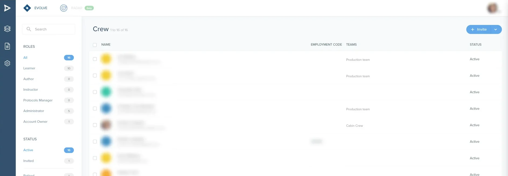
BeforeOld version
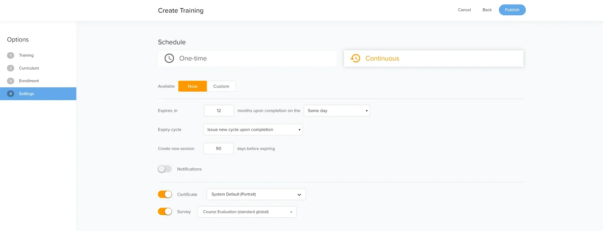
BeforeOld version
Mapping it showed why. Some pages sat seven levels deep. Cancelling meant starting over, and steps repeated.

Adding curriculum
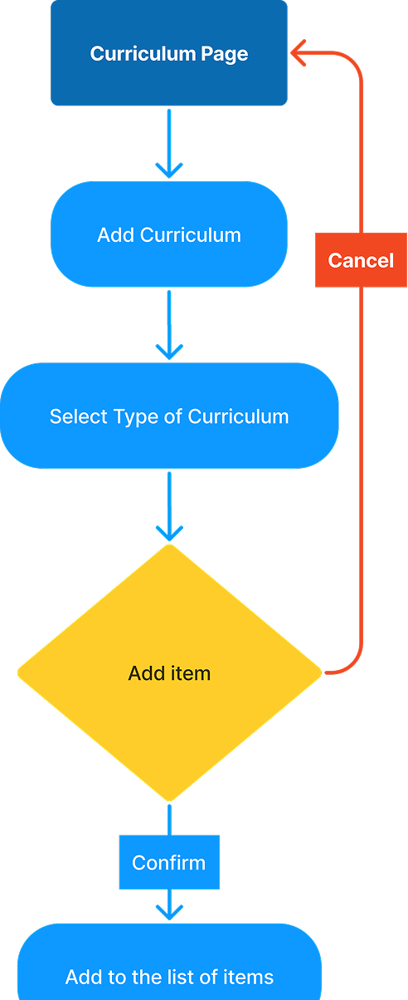
Cancelling forces users to restart from scratch.
Adding a user to a group
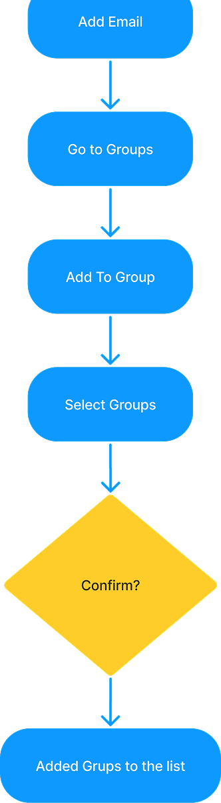
Redundant steps slow down progress.
Opening a module
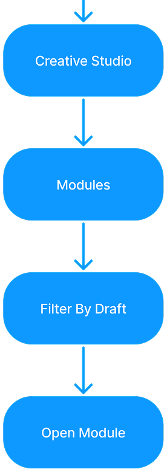
Deep navigation levels slow down core tasks.
What users and rivals told me
In the survey, most people named the system itself as the most frustrating part, ahead of courses, navigation or control.
I compared Scandlearn with CPaT, Aviation eLearning, Evionica, Leon and Webmanuals. The rivals looked modern but gave admins little control over courses and staff. Scandlearn had that control but buried it under an outdated, crowded interface. So the brief became: keep the control, lose the maze.
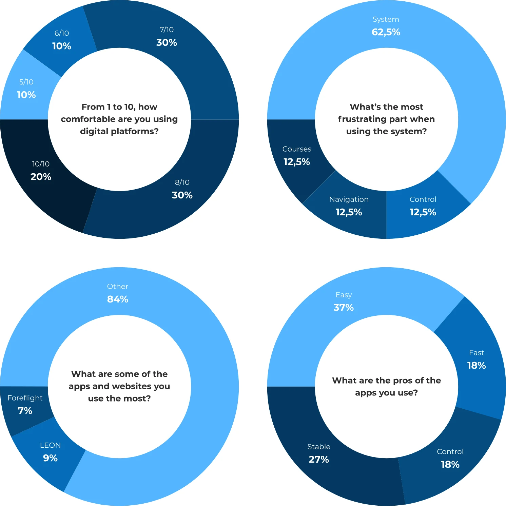
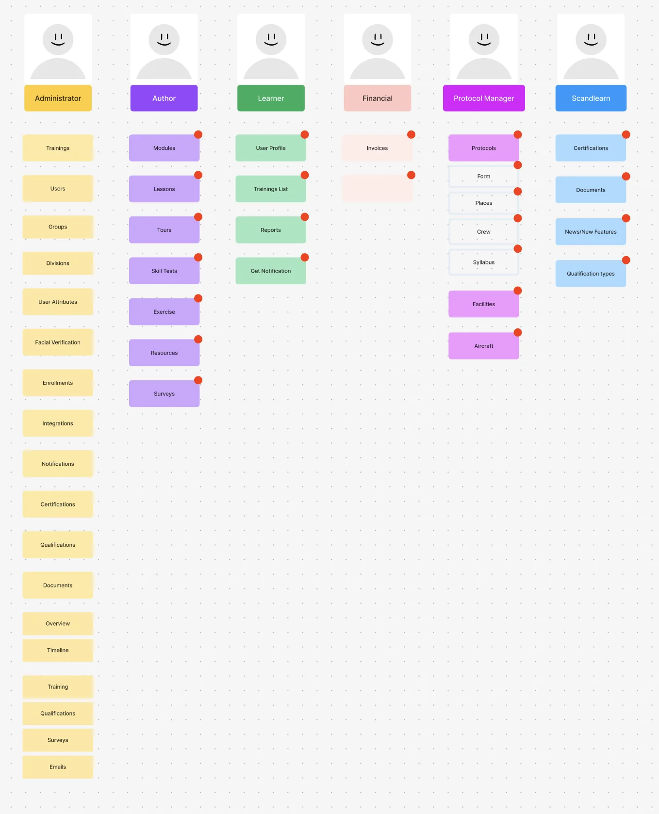
Search as the main way around
More menus don't fix findability. One search covers trainings, modules, users and materials, with type filters, a ⌘K shortcut and recent searches, so admins jump straight to what they need.
Fewer steps, no starting over
I redrew the two flows from the analysis above. Curriculum content is now picked from one list with filters, so cancelling no longer throws your picks away. Inviting a user and adding them to a group happen in one place, with no separate Groups page and no confirm step.
Adding curriculum
Inviting a user
The training list in three rounds
Admins spend most of their day in the training list, so I took it through three rounds. The first wireframe tested the layout. The second moved filters into a side panel and let a row open in place, showing its courses with links straight to each part of the training. The final version put navigation in one sidebar, moved search, columns and filters into the toolbar, and shows who is enrolled at a glance.
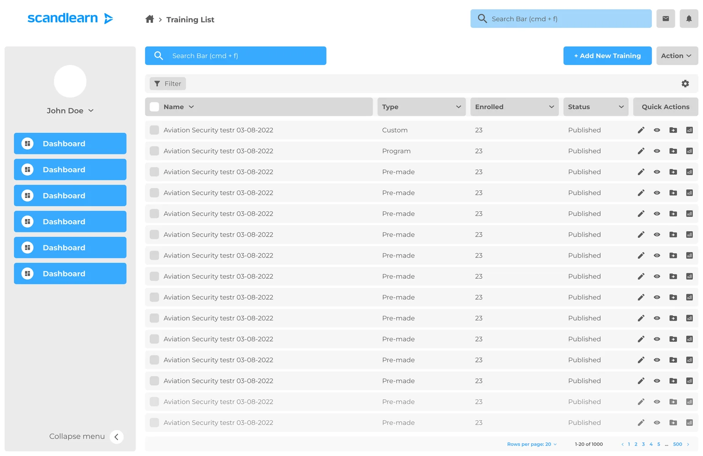
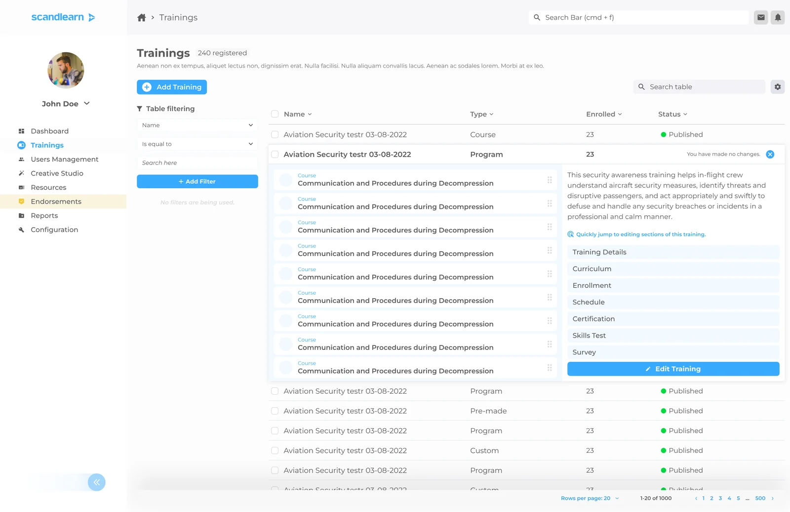
Edit without leaving the table. In the final version the pencil on a row opens the whole training in place, with tabs for curriculum, enrollment, schedule, certification, skill test and survey. Discard or save, and you are back where you were in the list. No page loads, no lost scroll position.
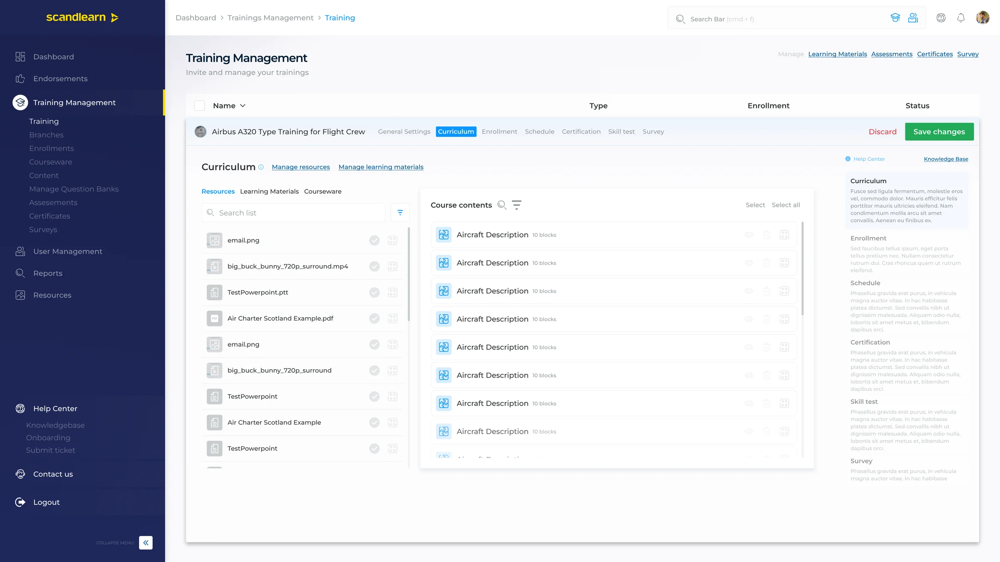
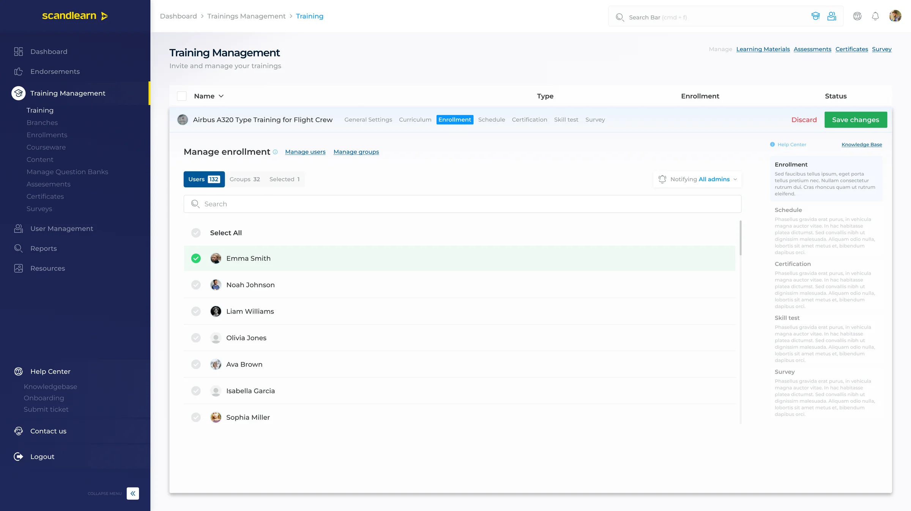
What learners see
Learners need two things: what to do next and where they stand. Their list shows progress, expiry and one Resume button. Inside a training, the course outline stays on the side with each lesson's status, so nobody loses their place.
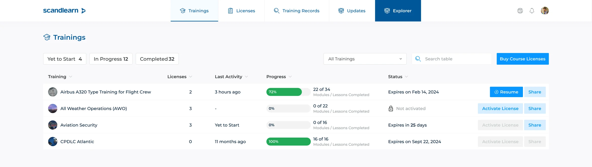
One component library
One designer, four roles, 400+ screens: without a shared library, every new page would have drifted. Inputs, pickers and tables with row actions were built once and reused, which made bigger tools like the certificate builder quick to put together.
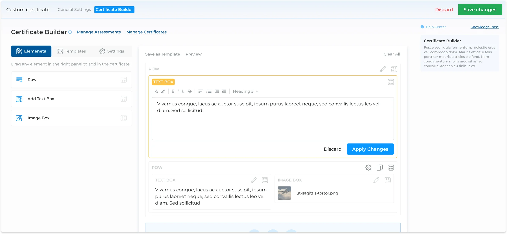
Outcome
+4months: the client extended my contract
After I handed over the redesign, 400+ screens, they kept me on to design a new website, a video player and a CBTA (competency-based training) feature. I left before the build finished, so I have no usage numbers.
What I'd do differently
Plan the second survey before the first one ends.
We had a baseline, the survey, but no plan to measure again. Next time I'd agree before handover to rerun it after launch.